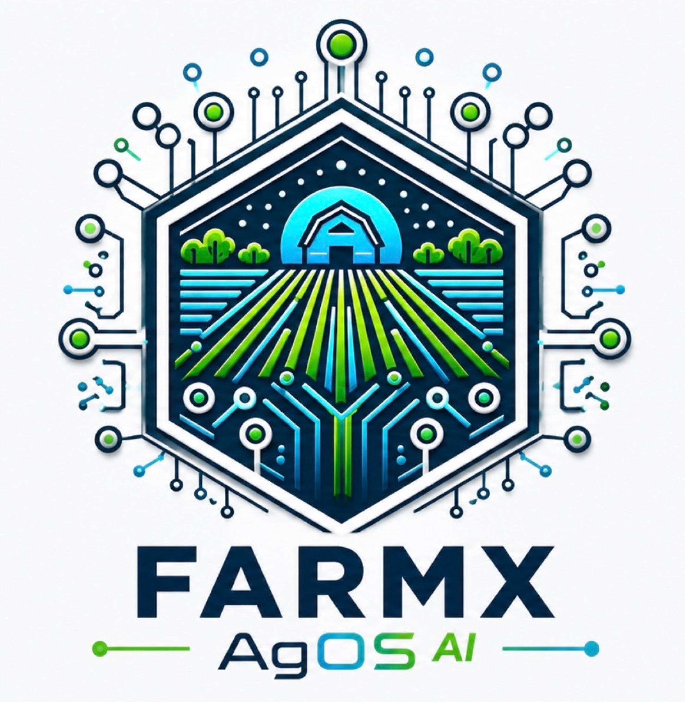

Agriculture is complex
Modern farming has become too interconnected to manage using disconnected systems.

About FarmX
FarmX exists because modern agriculture has become too complex for disconnected software, fragmented information and manual decision-making.
We are building the Agricultural Operating System that connects operations, people, assets, finance, water, machinery, agronomy and artificial intelligence into one living platform.
Our purpose is simple.
Help every farming business make better decisions.
Reduce operational friction.
Maximise the profit that is possible.
Who We Are
FarmX was founded from inside a working commercial farming business rather than inside a software company.
Every workflow has been shaped by real operational experience.
Every feature exists because it solves a real farming problem.
Our ambition is not to build another farm management system.
Our ambition is to build the operating system that modern agriculture has been missing.
Modern farming has become too interconnected to manage using disconnected systems.
Technology creates value only when it improves operational decisions.
Artificial Intelligence only becomes valuable when it understands what is actually happening on the farm.
Our objective is not incremental improvement. It is helping every farm reach its true operational potential.
We believe farming has become too complex for one person to optimise alone.
FarmX exists to become the intelligent operating partner that helps every farming business understand more, decide better and continually improve.